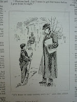
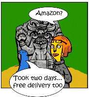

| Herbert & Margery Allingham |
{kind=link}
How could Allingham afford all this?
He had started the new year in full flow, writing three different
serials for three comic-and-story papers owned by the Harmsworths'
Amalgamated Press: that's three separate weekly instalments of
approximately 4,000 words each, for which he would earn between £12
and £16 per week. Two of the serials were nearing their end and soon
there were leaner months when fewer words were produced and only £4
or £5 arrived from the AP each week. Allingham was fortunate in that
he was usually able to supplement his household income by writing promotional copy
for hair products and indigestion remedies, thus regularly earning an
extra £20 per month from an advertising agency run by his father and
brothers. After the new baby was born in June 1913 he assisted his wife Emmie as
she wrote her first weekly serial, A Work-Girl's Love Story
for the Allingham family paper, The Christian Globe. This earned them
£54 but wasn't paid until the following April.
 |
| "It's hard to earn a living" |
{kind=link}
Advertising copy for his father's
agency and serials for the Amalgamated Press earned Allingham around
£750 in the calender year 1913. By the standards of the time this
was a lot. Not so much with a rectory to support. When Allingham and his family had first moved out of London in
1909 he had earned £550 partly from the Harmsworths and also from a
wider range of low paid journalism and copy-writing. Devoting himself
to his new bosses had initially proved worthwhile: Allingham's popularity sent circulations up: his editors were encouraged to start new papers; he was encouraged to
write new serials. He even negotiated a pay rise. From just under
£600 in 1910, his income had jumped to £1100 in 1911 and £1200 in
1912.
Allingham never saved any money. His
family grew, the household grew. The unforseen drop in income in the late spring of 1913, when
the AP editors began buying his reprints instead of commissioning new
work, could have been a disaster. In fact he saved the situation
towards the end of the year by negotiating with a firm of
publishers' agents who smoothed the way to deals with the periodical publisher
John Leng, a Dundee-based company that was already imperceptibly
merging with its competitor D.C Thomson. Allingham never enjoyed
working for 'the North'; they drove a harder financial bargain than
the Harmsworths and he found their editors duller and more
dicatatorial. Nevertheless, in the difficult years ahead, this steady
alternative income stream would keep his family solvent. In December
1913 an additional £250, paid as a lump from the agents, bought
Allingham's annual earnings back to the magical £1000.
I start 2013 with a dual
perspective. I completed and published Fifty Years in the Fiction
Factory: the working life of Herbert Allingham, 1867-1936 in
October 2012 then moved, almost immediately, to selecting and
organising the blogposts that comprise Sparks: a Year in
E-Publishing, The Authors Electric Anthology 2011-2012. Here
are two small slices of publishing history both presented from the
writers' point of view. (One of the justifications for Fifty
Years is that Allingham's working life represents many other anonymous and forgotten writers of
his period.) The differences between Allingham's experience and the
contributors to Sparks are glaring and they are not primarily
financial. It may be true that few members of Authors Electric are
currently able to employ cooks and governesses but one only has to read through the
Notes to Contributors section of Sparks to
realise how many of us are earning our livings via a mixed writing
economy -- occasional journalism, a few contracts with commercial
publishers, rights sales, forays into editorship as well as what we
hope will become the growing market of independent self-publishing. I
will freely admit, for myself, that I am the Emmie to my partner's
Herbert and were it not for his regular freelance journalism (no, he
doesn't write advertising copy for indigestion remedies) we would
almost certainly have to dispense with the donkey cart.
{kind=link}
During
a long wait in the doctors surgery this morning with one of our
children, I amused myself by running through the Sparks
table of contents and considering Allingham's comparative position on
each one. No, he didn't have to multi-task as we do: his job, once he was
committed to serial-writing, was to plug on day after day, never get
ill, never take a holiday, please his editors and deliver on time.
There was no thought that he might write 'for himself'; neither was there any
direct contact with his readers. His job was to entertain
people who he would never meet (either virtually or in person) and
who would never even know his name. No blog-tours, Facebook promos or
school-visits for Allingham. Writer's block would have been an
unthinkable disaster and Multiple Publishing Disorder would need to
be kept a closely guarded secret.
{kind=link}
There
is one aspect of similarity that we might like to consider and that
is the power of our principal e-publishing customer. Allingham was
born in the year Karl Marx completed the first volume of Das
Kapital and it was illuminating
to observe the periodical publishing world evolving through the
stages of capitalist accumulation and centralisation until, by the
time Allingham was comfortably ensonced in his decaying Essex
rectory, the 'genie' of the Harmsworth Amalgamated Press (to use the
words of his fellow writer, school story supremo, Frank Richards) had
'overspread the whole horizon' and almost all the alternative
periodical publishing houses had been taken over or forced into
liquidation.
 |
| Asteroth by Adam Price (Sparks) |
{kind=link}